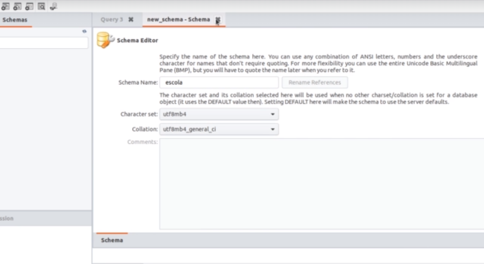
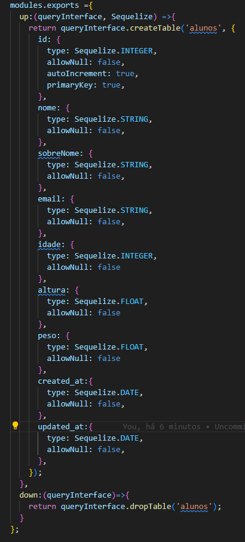
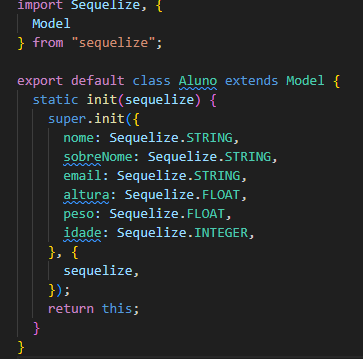
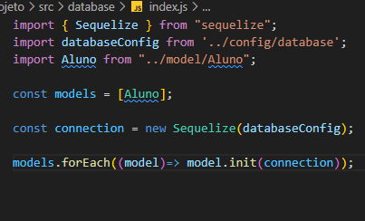
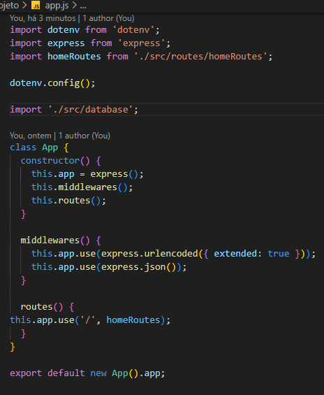

Sequelize
O Sequelize é um ORM, ou seja, um mapeador objeto-relacional. Isso significa que ele permite que você crie modelos
(classes) em TypeScript ou JavaScript que representam as tabelas do seu banco de dados. Assim, você pode manipular
os dados usando objetos e métodos, sem precisar escrever SQL diretamente.
Instalando e configurando
Primeiro passo é instalar o dotenv e configura-lo
npm install dotenv
O Dotenv é um pacote que serve justamente para gerenciar as variáveis de ambiente dentro de um projeto Node. js.
Essa ferramenta armazena a configuração dessas variáveis em um ambiente separado do código da aplicação.
Segundo passo tu cria um arquivo dentro da raiz do projeto com nome, .env, e dentro desse arquivo
ficará todas as coisas da base de dados.
DATABASE=escola
DATABASE_HOST = ip do servidor
DATABASE_PORT = porta(3306)
DATABASE_USERNAME = usuario,(ROOT)
DATABASE_PASSWORD = senha do servidor
Terceiro passo é configurar o dotenv, para isso é so ir em app.js
import dotenv from 'dotenv';
dotenv.config();
Quarto passo é configurar o sequelize, para isso sera criado um arquivo dentro da pasta do
projeto com nome .sequelizerc, ele nao terá extenção js, e para isso sera preciso ativa-lo:
ctrl + shift + p
depois digitar: change language mode
e selecionar Javascript
depois desses passos abra o arquivo e digite os passps:
const {
resolve
} = require('path');
module.exports = {
config: resolve(_dirname, 'src', 'database.js'),
'models-path': resolve(_dirname, 'src', 'models'),
'migrations-path': resolve(_dirname, 'src', 'database', 'migrations'),
'seeders-path-path': resolve(_dirname, 'src', 'database', 'seeds'),
};
pós toda essa configuração será preciso criar o arquivo database.js dentro do caminho
src/config/ esta configuração é onde estará todas as configurações do DB, para isso
irá configura-lo de tal forma, segui o exemplo:
require('dotenv').config();
module.exports = {
dialect: 'mariadb',
host: process.env.DATABASE_HOST,
port: process.env.DATABASE_PORT,
username: process.env.DATABASE_USERNAME,
password: process.env.DATABASE_PASSWORD,
database: process.env.DATABASE,
define: {
timestamps: true,
underscored: true,
underscoredAll: true,
'createdAt': 'created_at',
'updatedAt': 'update_at'
},
dialectOptions: {
timezone: 'America/Sao_Paulo'
},
timezone: 'America/Sao_Paulo'
};
Quinto passo será entrar no mysql workbank e criar um scherma para poder ter as migrações, apos conectar ao server
na web, configuri-o da seguinte forma:

agora o resto é com sequelize
Agora o sequelize vai criar as tabelas
Antes de fazer qualquer comando sera preciso instalar o sequelize e o mariadb
npm install sequelize mariadb
Agora colocando o sequelize como dev dependence
npm install -D sequelize-cli
npx sequelize migration:create --name=alunos
pós execução do comando será criado um arquivo dentro da pasta migrations, e será dentro dele q
sera configurado as tabelas
Depois da criação do arquivo, sera preciso edita-lo e adiconar os seguintes comandos

depois da criação do arquivo de migração, sera preciso rodar o comando, para fazer a migraçao pro
DB.
npx sequelize db:migrate
Após a migração será preciso adicionar um novo model que no caso será Aluno.js
 Este será o modelo para a tabela e ele precisará de
conxão, para isso acontecer sera preciso ir na pasta database e adicionar um novo arquivo chamado
index segui abaixo a configuração:

Lembre-se que no arquivo app será preciso importar a database

Agora tera que ir ao controller para fazer os testes, para ver se encontra algum erro.